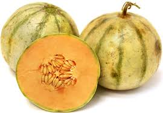
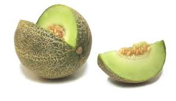
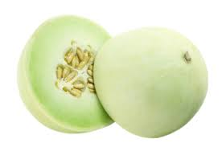

|  |
A Charentais melon is a type of cantaloupe melon, Cucumis melo var. cantalupensis. It is a small variety of melon, similar in flesh to cantaloupes, but with a more fragrant smell. It was developed in western France around 1920 as a more refined cantaloupe. Most are now produced in North Africa, with some limited production in the United States |
|  |
The Galia melon, also known as sarda in Southeast Asia, is a type of F₁ hybrid melon originating from a cross between the green-flesh melon cultivar 'Ha-Ogen' and the netted-rind melon cultivar 'Krimka'. |
|  |
A honeydew has a round to slightly oval shape, typically 15–22 cm (5.9–8.7 in) long. It generally ranges in weight from 1.8 to 3.6 kg (4.0 to 7.9 lb). The flesh is usually pale green in color, while the smooth peel ranges from greenish to yellow. Like most fruit, honeydew has seeds. Honeydew's flesh is often eaten for dessert, and is commonly found in supermarkets across the world. |

|
Cantaloupe refers to a variety of Cucumis melo, a species in the family Cucurbitaceae. Cantaloupes range in weight from 0.5 to 5 kilograms. Originally, cantaloupe referred only to the non-netted, orange-fleshed melons of Europe. |